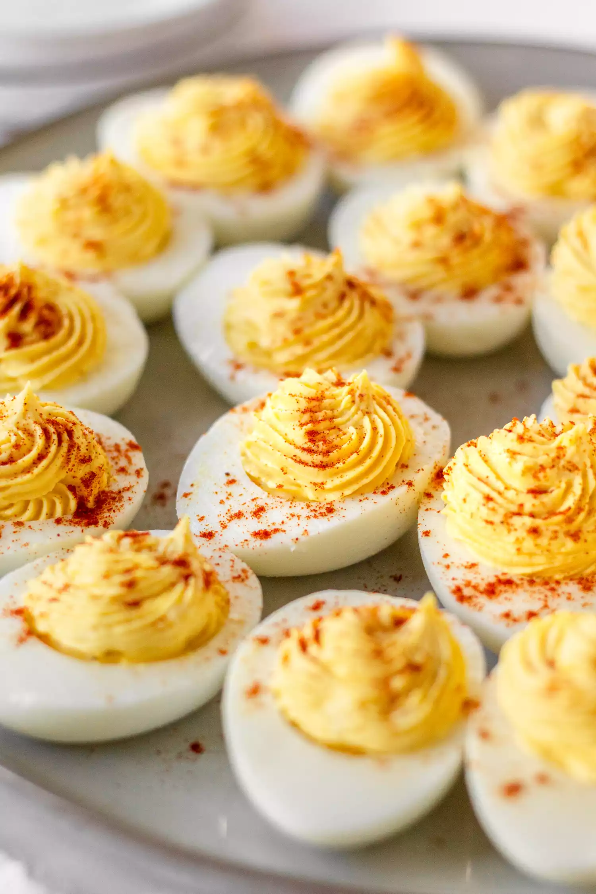

How to Make Deviled Eggs
- Prep Time: 15 mins
- Total Time: 15 mins
- Servings: 6
- Yield: 12 deviled egg halves
Deviled Egg Ingredients
- Eggs: This recipe yields 12 deviled egg halves, so you'll need six boiled eggs.
- Mayonaise: Mayonaise makes the filling extra creamy.
- Sugar: A teaspon of white sugar lends a hint of sweetness.
- Vinegar: A teaspoon of white vinegar, meanwhile, cuts the sweetness with acidity.
- Mustard: Use store-bought prepared mustard.
- Vegetables: You'll need an onion and celery.
- Seasonings: These deviled eggs are seasoned with salt and paprika.
How Long to Boil Eggs for Deviled Eggs
Perfect deviled eggs start with perfectly hard-cooked eggs. I recommend following using our Hard-Boiled Eggs recipe, which takes about 50 minutes from beginning to end.
How Do You Make Deviled Eggs?
Here's a brief overview of what you can expect when you make homemade deviled eggs:
- Cut the boiled eggs in half and remove the yolks. Reserve the whites.
- Mash the yolks with a fork and add the remaining ingredients.
- Stuff or pipe the filling into the egg white halves.
How Long Do Deviled Eggs Last?
Store the leftover deviled eggs in an airtight container in the refrigerator for about four days
Ingredients
- 6 hard-cooked eggs
- 2 tablespoons of mayonnaise
- 1 teaspoon white sugar, or to taste
- 1 teaspoon white vinegar
- 1 teaspoon prepared mustard
- 1 tablespoon finely chopped onion
- 1 tablespoon finely chopped celery
- Half teaspoon salt, or to taste
- 1 pinch paprika, or to taste
Directions
- Step 1: Gather all ingredients. Peel hard-cooked eggs.
- Step 2: Slice eggs in half lengthwise and remove yolks; set whites aside
- Step 3: Mash yolks with a fork in a small bowl. Stir in mayonnaise, sugar, vinegar, mustard, onion, and celery; mix well and season with salt to taste.
- Step 4: Stuff or pipe egg yolk mixture into egg whites.
- Step 5: Sprinkle with paprika. Refrigerate until serving.
